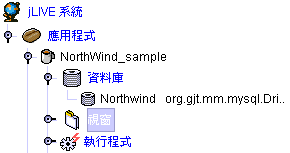
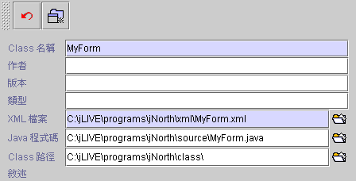
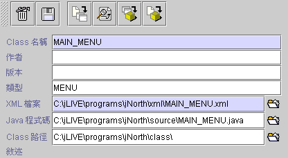

|

|
 |
Chapter 6
Form |
 |
6.
視窗 (form)
新增視窗 (create new form)
視窗屬性 (form properties)
視窗管理 (form arrangement)
視窗設計平台操作(design
framework)
視窗除錯與事件中斷 (form debug and event interrupt)
元件 Focus 管理 (component focus management)
視窗畫面
(form)
是分散式應用程式系統的基本模組，也是應用程式的操作介面。一個應用程式通常含有各種不同作業功能的視窗
(forms) ，組合架構成應用系統作業流程 (system operation flow)；微軟的作業平台中，視窗是一個基礎的操作介面，而 Java™ 的基礎操作介面稱之為
Panel ，為了方便設計者的習慣，我們將 Panel 也稱之為視窗
(form)。
6.1 新增視窗 (create new form)
建立一個新的工作視窗。

點選【視窗】節點，然後可以按下右方 新增視窗  (出現視窗設定頁)
(出現視窗設定頁)

-
取消
(
取消新增動作 )
-
新增
( 新增視窗 )：輸入相關資料後按下新增視窗鍵。系統將會建立此視窗節點。

-
刪除
 ( 刪除此視窗 ) ( 刪除此視窗 )
-
儲存
( 儲存視窗設定 )
-
製作
 ( 製作
Java™ 程式碼 Xml --> Java ) 由 XML 檔產生 Java™ 的原始程式。 ( 製作
Java™ 程式碼 Xml --> Java ) 由 XML 檔產生 Java™ 的原始程式。
-
瀏覽
( 瀏覽
Java™ 程式碼 ) 查看所產生的 Java™ 原始程式。
-
編譯  ( 編譯 Java™ Java --> class ) 編譯
compile Java 程式。
( 編譯 Java™ Java --> class ) 編譯
compile Java 程式。
-
建立
( 建立
class Xml --> Java --> class ) 重新從 XML 產生 Java™ 原始程式並編譯成 class。
-
Class 名稱：登錄工作視窗名稱，視窗名稱不可填空白。必須以英文命名且遵循 Java™ 變數的命名法則，系統將以此名稱產生 Java™ class
檔，並在應用程式中參照。改變已存在的視窗 class
名稱，系統將檢查是否重複並將相關的程式文件一併予以更名。
-
作者
(author)：程式設計者名稱。
-
版本
(version)：視窗版本別。
-
類型
(category)：工作視窗分類，可於控制面板檢視時暫時隱藏。
-
XML 檔
(XML)：建立或指定一個 XML
檔。第一次進入編輯工作視窗時會產生一個 XML 檔，XML 檔中記錄視窗的所有屬性及程序。
-
Java™ 程式碼
(Java™ source code)：由系統產生的 Java™ 程式碼。
-
Class 路徑
(class path)：建立或指定一個放置 Java™
class 的檔案資料夾。
-
文件附註
(document notes)：設計者對於工作視窗相關說明。
▲Top
Copyright © 2001~
2004 Probe Technology . All Rights Reserved.
Questions, comments,
and suggestions to Service@probe.com.tw
|